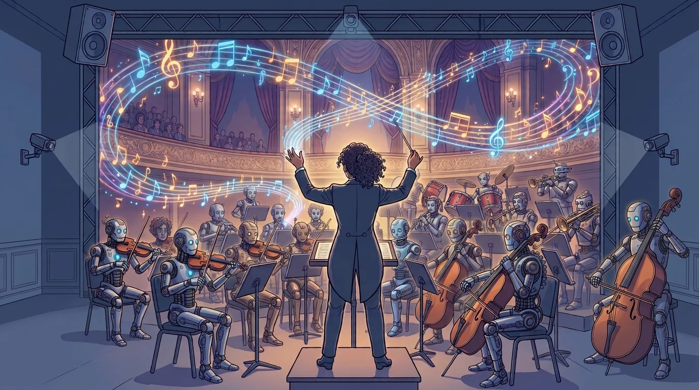
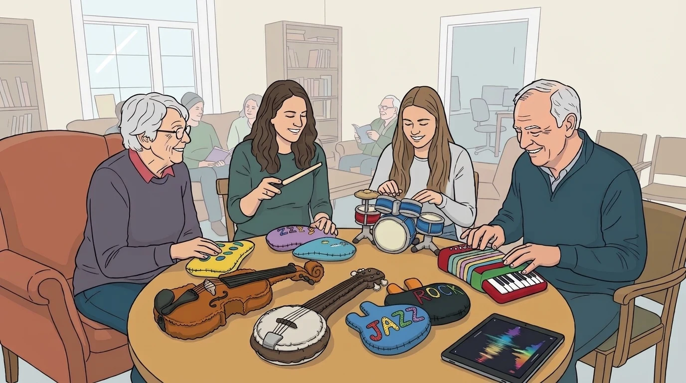
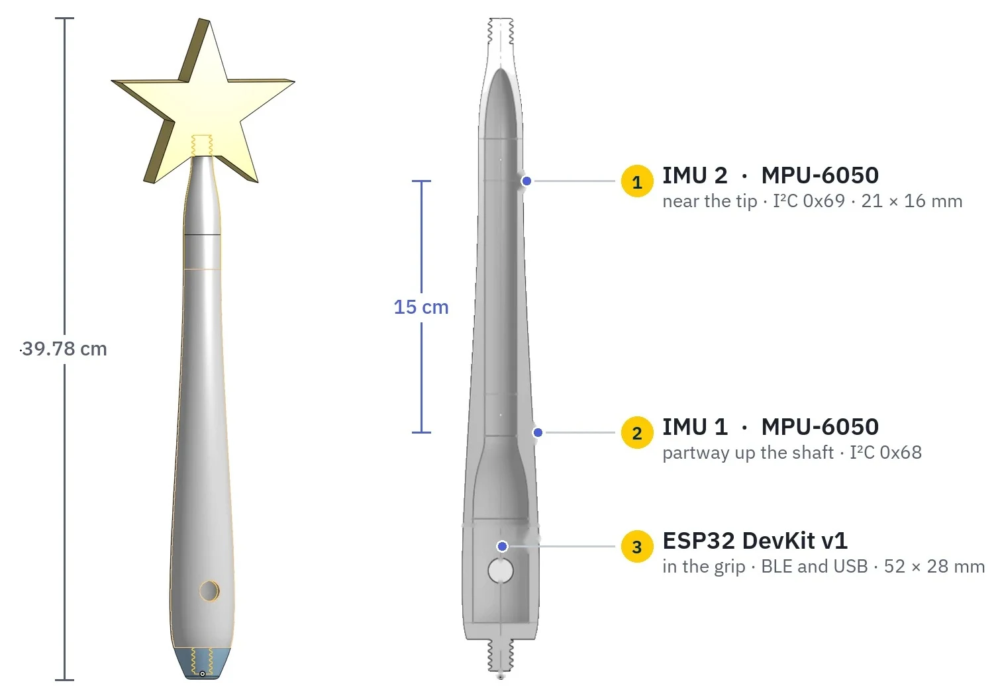
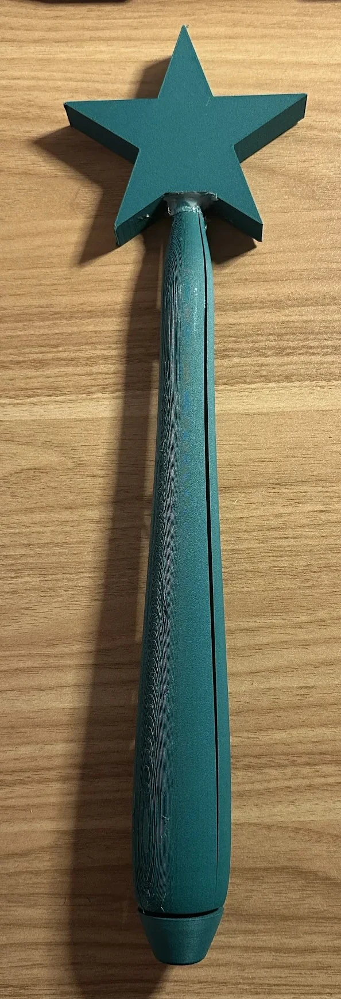
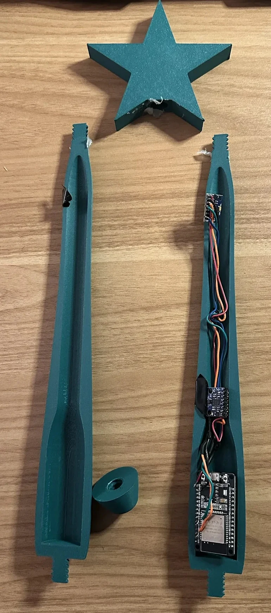
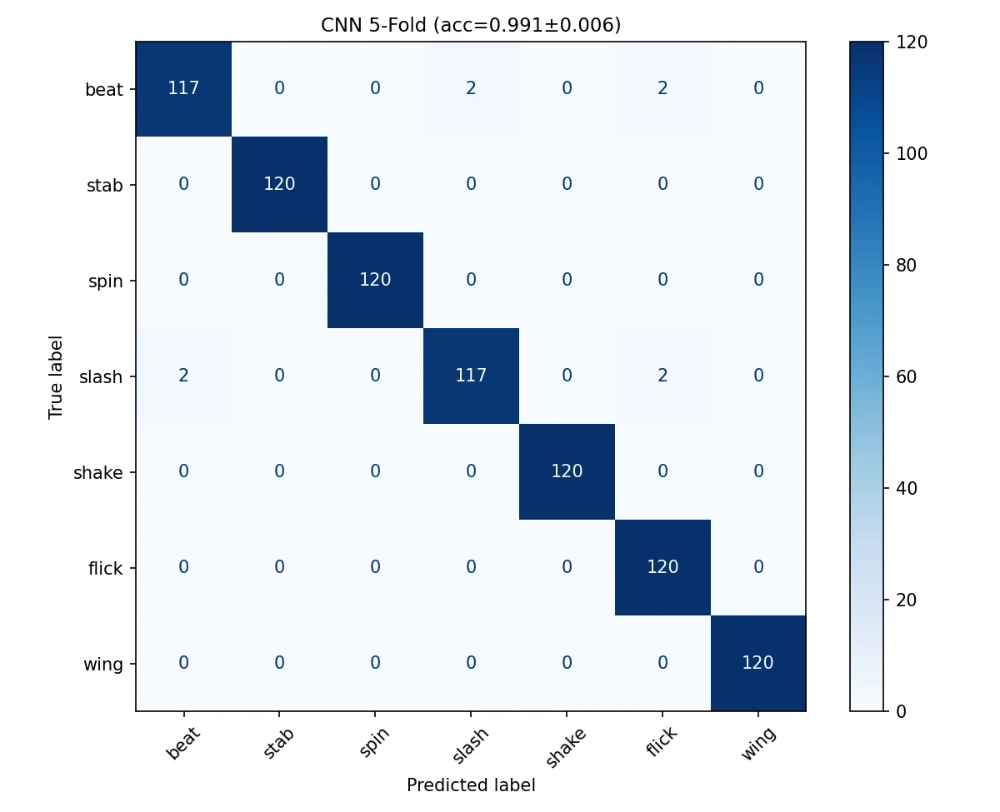
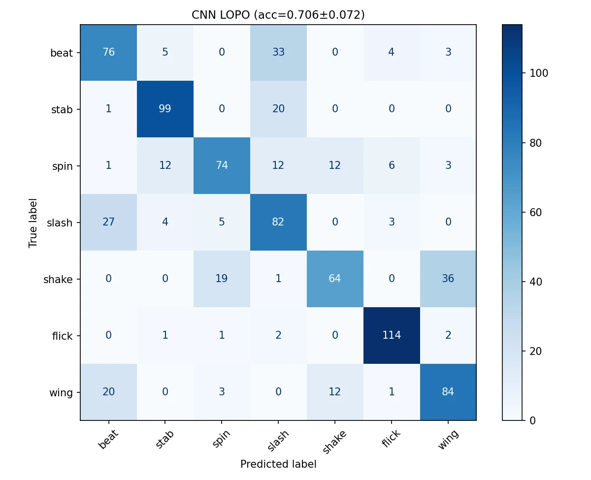
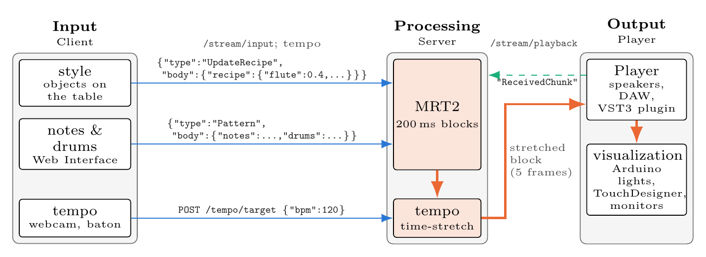
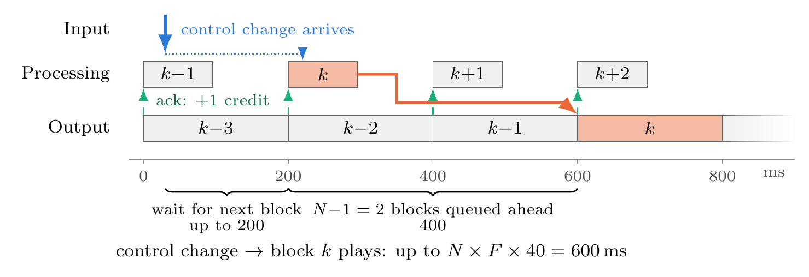

SuperConductor
Exploring Playful, Interactive, and Collaborative Human‑AI Music Co‑creativity
Anonymous Authors, Anonymous Institute
Paper (CLIP workshop submission)
Recent years have seen rapid progress in text-to-music generation. Yet typing a prompt and waiting for a finished clip is far from how music is usually made. Advances in live music models have opened a promising research direction toward making AI music generation more interactive and embodied. However, these models still lack an interface that lets people engage with them as performers: through their bodies, in real time, and together.


We present SuperConductor, a playful, interactive, and collaborative human-AI music co-creating system. Built on a real-time music generation model, SuperConductor translates webcam-tracked hand gestures, the motion of the Sensor Equipped Baton, and the movement of detected tangible objects into control over tempo, genre, and other musical attributes.
In a conductor mode, a user shapes the music through gestures and body motion as if they were conducting an AI music ensemble. In a collaborative mode, people sharing a public space, such as a lobby or airport, jointly shape the music they hear, turning a soundscape normally dictated by others into a playful, collective creative experience.
To make a live music model conductable, SuperConductor bounds control latency with a credit-based client-server architecture, time-stretches the generated audio toward the conducted tempo, and lets multiple inputs and users steer the model simultaneously. As ongoing work, we report preliminary evaluations of its beat controllers and outline plans for public installations and a user study.
Collaborative mode
Each plush on the table maps to a musical prompt (here, brushed jazz drums, violin, accordion, and ambient synthesizer), and moving a plush closer to the center raises its weight in the mix. In this clip, the music shifts with the positions of the plushes, and placing two plushes together forms a shared string orchestra combo.
Conductor mode
Conductor mode gives one person direct, individual control over the music’s timing, as if leading an ensemble. With the style chosen beforehand, conducting a 4/4 pattern in front of a webcam speeds up or slows down the generated music to match your tempo, and holding up a closed fist hands control back to the model. Music style parameters are determined outside of the conducting mode, from sources such as the collaborative plushes on a table, or via the development interface.
To estimate tempo, the hand’s position over the last 5 seconds is compared with time-shifted copies of itself. A 4/4 pattern repeats every bar, so the copy lines up best when the shift is exactly one bar. If a bar lasts T seconds, its four beats give 4/T beats per second, or 4 × 60/T BPM.
Position and similarity
Conducting position Shifted copy
Tempo
Estimate Filled-in estimate Playback BPM
BPM
Sensor Equipped Baton
The 39.78 cm body is 3D-printed as two half-shells. It holds an ESP32 board in the grip and two MPU-6050 inertial measurement units (IMUs) along the shaft, 15 cm apart, each reporting three-axis acceleration and angular rate. The microcontroller runs no model. About 50 times a second it sends the twelve raw values over Bluetooth Low Energy to a bridge process on a laptop, which recognises gestures and forwards the stream to a browser page.



We recorded 842 clips of the seven gestures from four performers, all members of the project team (421, 141, 140 and 140 clips; about 120 per gesture). Five-fold cross-validation splits all clips at random, so a performer appears in both the training and the test data. Leave-one-performer-out (LOPO) tests on a performer the model has not seen. With performers mixed, every model exceeds 96%. With the test performer held out, every model loses between 27 and 36 points.


System Architecture
The backend is one server process that runs MRT2. Clients send control messages to
/stream/input, and the player receives audio from /stream/playback. Any
number of clients can connect to the input channel. The server keeps the MRT2 state in memory and
generates one block at a time.
The player paces generation with credits. When the player connects, the server generates
N blocks. After that, it generates one block for each ReceivedChunk message
the player sends when a block has played. From control message to first sample at the sound card,
the measured delay is 556 ms on average (451–659 ms): 101 ms on average waiting for the next block,
400 ms behind the N − 1 queued blocks, and 48 ms of output latency.
Generating a block takes about 96 ms, which leaves 360 ms of slack. This slack absorbs the 300 ms
stall when a new prompt must be embedded.

/stream/input,
and tempo updates over HTTP. Each MRT2 block is time-stretched and streamed to the player on
/stream/playback, and one ReceivedChunk is returned per block played.
Tempo and style
To make the generated music follow the conductor’s tempo, we time-stretch the generated waveform. For each audio block, we compute a target playback speed as the conducted tempo divided by the estimated tempo, and move the current speed gradually toward this target to avoid abrupt tempo changes. The block is then time-stretched to this speed using a WSOLA implementation, to maintain pitch correctness and minimize perceptual discontinuities in the audio.
The browser detects and tracks the plushes with YOLOE and BoT-SORT on WebGPU. The client
identifies each plush by comparing a DINOv2 embedding of its crop with up to 12 stored reference
frames of each known plush, so a plush that is occluded or leaves the view is re-identified when
it reappears. A plush’s weight increases as it approaches a reference point on the table, and four
times a second the client sends all weights in one UpdateRecipe message.